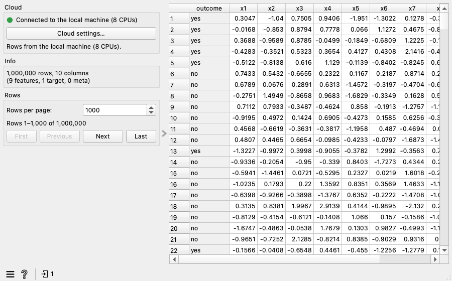

Shows the rows of a cloud table, a page at a time, fetched from the machine.

Like every Cloud widget, it has a Cloud box at the top: whether a machine is connected, Cloud settings…, and what the last job ran with, how long it took and what it cost. See Cloud widgets.
Use it instead of Orange's Data Table, which shows only the cloud table's empty placeholder row. It's also how you look at the outputs of Cloud Predictions, Cloud k-Means and the other widgets whose results stay on the machine.